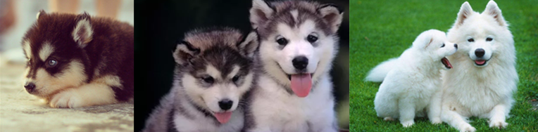

XXXX年XX月XX日 12:05 三宝大乱斗
雪橇三傻，是指哈士奇、阿拉斯加犬和萨摩耶这三种犬科动物，其中阿拉斯加犬是大傻，哈士奇二傻，萨摩耶三傻。三傻兄弟有一个共同的特性就是对人类的友好和吃苦耐劳的筋骨，而且亲近人类。

阿拉斯加雪橇犬也叫阿拉斯加犬，是最古老的极地雪橇犬之一，它的名字取自因纽特人的伊努伊特族的一个叫做马拉缪特的部落。这个部落生活在阿拉斯加西部一个叫做科策布(Kotzebue)的岸边。成年阿拉斯加犬有着安静、高雅的气质，对主人非常忠心。
阿拉斯加雪橇犬结实、有力、肌肉发达而且胸很深。当它们站立时，头部竖直，眼神显得警惕、好奇，给人的感觉是充满活力而且非常傲娇。头部宽阔，耳朵呈三角形，警惕状态时保持竖立。口吻大，宽度从根部向鼻尖渐收，口吻既不显得长而突出，也不显得粗短。被毛浓密，披毛有足够的长度以保护内层柔软的底毛。阿拉斯加雪橇犬有各种不同的颜色，如灰、黑白、红棕。培育它的目的是为了耐力而不是速度，因为它们的主要用途是拉雪橇
哈士奇学名西伯利亚雪橇犬，但我们都习惯叫它二哈，或者拆家小能手，它是 雪橇三傻 的老二。哈士奇主要生活在在西伯利亚东北部、格陵兰南部，名字来源于其独特的嘶哑叫声。哈士奇性格多变，有的胆小，有的暴力。但是被人们收养的哈士奇性格已经变得极为温顺了，哈士奇和金毛、拉布拉多并列为三大无攻击性犬类。
西伯利亚雪撬犬属于中型工作犬。脚步轻快，动作优美，身体紧凑，有着很厚的被毛，耳朵直立，尾如毛刷，显示出北方地区的遗传特征。西伯利亚雪撬犬是和狼的血统非常近的犬种，所以外形非常的像狼，有着比大多数犬种都要厚的毛发。值得一提的是“蓝眼，三火”，蓝眼指的就是眼睛是蓝色的；三火指的是额头上的三道白色痕迹，看起来像三把燃烧的火苗。“蓝眼，三火”曾经一度被不良商家炒作为是哈士奇的标准，其实这与哈士奇犬种CKU标准没有任何关系。
摩耶犬（英文：Samoyed），别称萨摩耶，原是西伯利亚的原住民萨摩耶族培育出的犬种，一岁前调皮、灵动。它机警、强壮、灵活、美丽、高贵优雅、乖巧可爱，有着非常引人注目的外表，有“微笑天使”的称号，也有着“微笑天使面孔，捣蛋魔鬼内心”之称。萨摩耶犬的颜色为白色；部分带有很浅的浅棕色、奶酪色、浅棕色。此外其他颜色都属于失格。世界上曾出现过一只灰白色萨摩，FCI承认他是具有纯种血统萨摩耶基因的返祖萨摩，黑色萨摩耶犬极为罕见。
萨摩耶犬是因西伯利亚牧民族萨莫耶德人而得名，原产位于俄罗斯北极地区，起源于17世纪。原始的萨摩耶犬是由如今定居在乌拉尔山以东的极地地区的萨莫耶德游牧部落所培育的。在19世纪末，有毛皮商人将此犬输入美国及欧洲等地。而后该犬传到英国，因其雪白的毛色深得人们喜爱。20世纪初期，北极探险的热潮中，此犬因其天生的特性为探险者提供许多帮助，而获得殊荣
免责声明：以上内容为网友在XXX栏目上传并发布，仅代表发帖网友观点，并不代表本网赞同其观点和对其真实性负责。